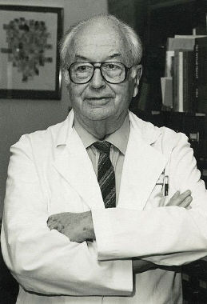

|  |
Cogan's sign = Cogan's lid twitch, in patients with myasthenia. When the patient's eyes are directed downward for 10 to 20 seconds and the patient is then instructed to make a vertical saccade back to primary position, the upper eyelid elevates and either slowly begins to droop or else twitches several times before settling into a stable position
Cogan-Reese disease = A syndrome characterized by a matted or smudged appearance to the surface of the iris, unilateral glaucoma in the eyes with multiple peripheral anterior synechiae, multiple nodules of the iris, and ectopic Descemet's membrane.
Cogan's syndrome = Syndrome of interstitial keratitis characterized
by abrupt onset of vertigo, tinnitus, and usually rapid development of
bilateral deafness.
David Glendenning Cogan was born in Fall River, Massachusetts, where his father was an Episcopal minister. He was introduced to ophthalmology by his mother, herself a practitioner and a pioneering ophthalmologist. He attended local school until 1925, when he enrolled at Dartmouth College, where he combined a collegiate schedule with the first two years of medical school.
Cogan continued his studies at Harvard Medical School, graduating in 1932. He interned at the University of Chicago and underwent specialty training in ophthalmology as a resident at the Massachusetts Eye and Ear Infirmary in Boston. He then went abroad to obtain further experience in Switzerland, Germany and Holland as a Mosely travelling fellow.
Already in 1934 he succeeded his old mentor Frederick Verhoeff (1874-1968) as director of the Howe Laboratory of Ophthalmic Research, and he became Senior Surgeon at the Infirmary. During Cogan's 30-year stewardship the Howe Laboratory was to have a tremendous influence on ophthalmic research.
In the years between 1955 and his retirement Cogan was Henry Williams Professor of Ophthalmology at the eye clinic of the Harvard Medical School university hospital.
Following his mandatory retirement in 1973, aged 65 years, Cogan moved to the National Institutes of Health, where he continued his research activities. Despite his age, the tempo of his work continued unabated and he often put in 10-hour days and 6-day weeks.
David Cogan in a fruitful way has encouraged the cooperation between clinicians and scientists of basic research. He initiated and established the ophthalmological courses of basic science, now a part of specialty training at almost every medical faculty in the USA. He also introduced regular appointments for basic research scientists at the eye clinic of Harvard, thus facilitating the cooperation between scientist and clinician, setting an example to all major eye clinics in the USA. The fruitful research climate at his institution has resulted in several of the scientists at Howe Laboratory receiving more honorary awards than those of any other eye research laboratory.
Scientifically David Cogan has been very productive, working in many areas of ophthalmology. As a pathologist he was with the first group of American medical men going to Hiroshima to examine the effect of radiation following the atomic explosion. Through his studies of radiation cataracts he became one of the foremost in this area. He also contributed to the development of relationships between American and Japanese Ophthalmologists. He was one of the first ophthalmologists to visit Germany after the Second World War in an effort to "heal the wounds" and re-establish personal contacts between ophthalmologists in Germany and the USA. When, in his eighties, he was invited to be a lecturer of honour with the association of German ophthalmologists, and rendered his lecture in German.
It is in neuroophthalmology that David Cogan is internationally best known. Already in 1948 he published Neurology of the Ocular Muscles, a book later to go through several editions. The book contains a survey of various forms of nystagmus still worth reading.
David Cogan was an influential teacher, cherished by his countless student, of which several have become prominent. He believed the essence of investigation was originality, curiosity, and perseverance, and fostered that spirit in the talented clinicians and basic scientists he recruited to Howe. Despite his great workload Cogan found time for his family and friends. His home in the city or in the countryside at Lake Michigan were meeting places for scientists in ophthalmology.
During his long career Cogan has received many awards. Among them are the Warren Prize in 1944, Proctor's Award 1954, the Mackenzie medal in 1968, the Research to Prevent Blindness Award 1969 and the Gonin Medallion 1974. In 1985 he was honoured by the dedication of the David G. Cogan Library at the National Eye Institute. His name also lives on in the Cogan Ophthalmic History Society and the David Glendenning Cogan Professorship of Ophthalmology, Harvard Medical School.
During the years 1960 to 1966 he was editor-in-chief of Archives of Ophthalmology, and a member of the editorial staff of Graefe's Archive for Clinical and Experimental Ophthalmology since 1972.
"To have such a seminal influence on your field is given to very few
people ... how a man could by virtue of his mental agility, skills, and
kindness catapult to the top remains an example and a lesson."
Frederick A. Jakobiec, MD
"My connection with other entities to which you refer were similarly
chance observations during a career, now coming to a close, in which I
had an unusually favourable academic position. They were modest contributions
that have reflected undue credit to me because of the eponymic designation.
If, and when, their etiologic origins are clarified they should be classified
by a more appropriate terminology."
This letter, written in his own hand, illustrates Cogan's humble attitude
to his own career.